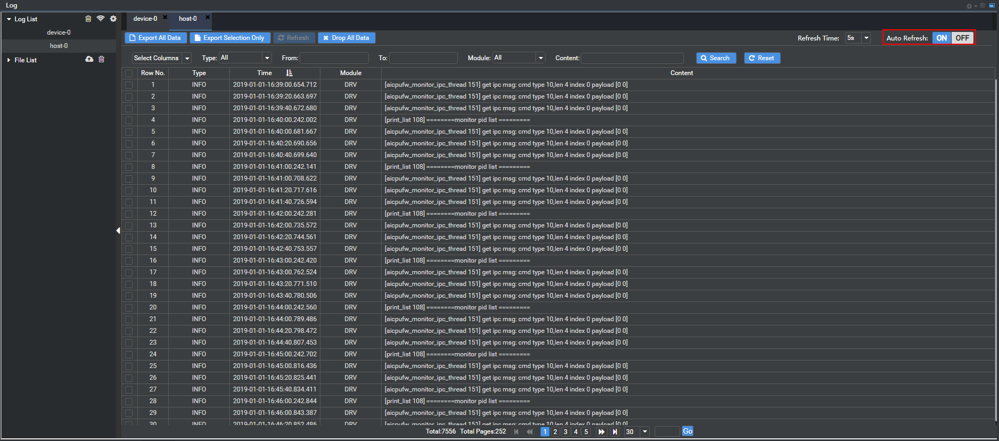
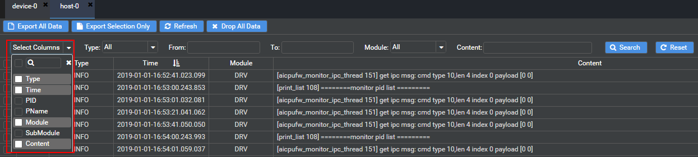

Viewing Logs
In the address box of the Chrome browser, enter the URL of Mind Studio:
https://IP address of the installation machine:8888Click the Log tab at the bottom of the window. The Log window is displayed.
Click in Log List at the upper left corner, and enter the host IP address (HostAddress) and port number 18080 (Port), as shown in Figure 1.
Figure 1 Connection settings dialog box

If you want to break the connection, click on Log List. The dialog box shown in Figure 2 is displayed. Then, click Yes.
Click OK. If Connect success! is displayed in the right pane, the connection is successful.
In the Log window, expand Log List, select a device or host, and view all logs of the category.
Each log contains the following fields:
- Type: log level
- Time: log generation timestamp
- Module: name of the module that reports the log
- Content: log content. Double-click the log information under this column to view the log context in the dialog box is displayed. If the Time column is empty, the log context is not available.
You can click Select Columns on the left of the page to filter out unwanted fields. For example, the following fields can be left:
- PID: ID of the process that reports the log
- PName: name of the process that reports the log
- SubModule: name of the submodule that reports the log
You can search logs based on the log level, time range, process ID, process name, module name, sub-module name, and log content.
After the device or host log window is opened where the Auto Refresh function is ON by default. The logs are dynamically obtained from the host and updated every five seconds. The latest 10,000 logs are obtained each time, as shown in Figure 3.
Figure 3 Refreshing log information
When you click the Search button or jump to another page, Auto Refresh is automatically disabled and dynamically obtaining logs from the host is also stopped. Logs can be dynamically updated only after you manually enable Auto Refresh. If Auto Refresh is enabled for different devices or hosts at the same time, only one device or host log is transmitted each time. The Log window displays the logs of the current device or host.
You can also click Refresh to dynamically obtain the latest logs from the host. This button is available only when Auto Refresh is set to OFF.
To adjust the log columns to be displayed, click the Select Columns drop-down list box at the top of the Log window, as shown in Figure 4.
Figure 4 Setting the log columns to be displayed
 NOTE:
NOTE:
Search by Content is valid only for the currently opened file.